Dr. Milena is a true example of a Radiant Being who is in alignment with her purpose. She is heart-centered and has the focus and ability to see much more than the physical.
Izkušnje strank
Mnenja strank
Osebne izkušnje ljudi, ki pri Quantum Health izpostavljajo strokovnost, srčnost, individualen pristop in občutek zaupanja.
Quantum Health
Resnične izkušnje
Mnenja strank prikazujejo različne izkušnje z obravnavami, estetiko, lasersko epilacijo, celostnim pristopom in osebnim stikom z dr. Mileno Omerzu Pevec.
Izkušnje strank
Zaupanje, strokovnost in osebni pristop
Stranke najpogosteje izpostavljajo občutek slišanosti, mirno okolje, strokovno razlago in celosten pristop, ki povezuje dobro počutje, estetiko in osebno podporo.
Kvaliteto vedno postavljam na prvo mesto in zase izbiram le najboljše. Hvala QuantumHealth, ker se v svoji gladki koži počutim odlično in je britvica preteklost.
Arnela Nadarević
Dr. Mileno Omerzu Pevec sem spoznala pred približno 10 leti. Rezultati so več kot zadovoljivi, pa še cenovno dosegljivi.
Danica Skok
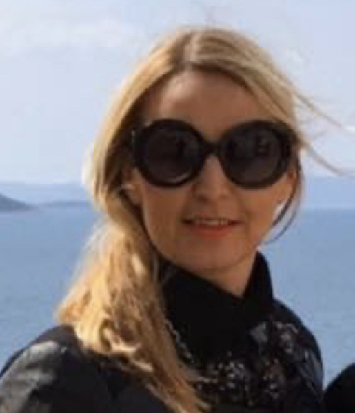
Quantum Health je kraljestvo, kjer zaživijo vsi nivoji človeka. Podpora na vseh nivojih, ne samo z uspešnostjo na področju estetike.
Urška Hrovat
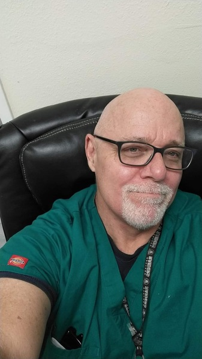
She is a kind and deeply caring person of high consciousness and high character. Her foremost commitment is always to those under her care.
Dr. Michael Nielson
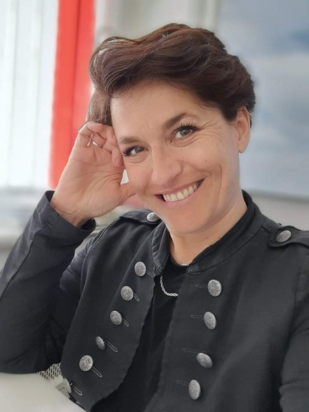
Quantum je kraj, kjer že ob vhodu začutiš toplino, sprejetost in prostor, kjer intuitivno občutiš mir, profesionalnost, a hkrati domačnost.
Mateja Jenko
Na Holistični center Quantum Health prisegam že leta, ker je to center, katerega storitve imajo neprecenljivo dodano vrednost.
Monika Jelinčič Zupanc
Quantum Health clinic has great energy, amazing people and it is somewhere you definitely want to come to recharge.
Brady Ellison
World archery championLasersko odstranjevanje dlak v Quantum Health kliniki je meni spremenilo življenje. Hvala Quantum Health punce, res ste carice.
Toja Ellison
World archery championKo prestopim prag Quantum Health centra, vem in čutim, da sem tam z razlogom in to je zagotovo moja pot navzgor.
Ivica Plešnik - Iza
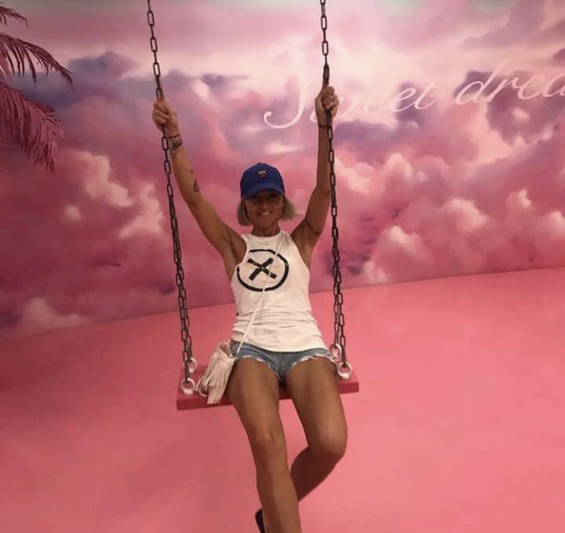
Če bi se morala odločiti še enkrat, bi ponovno 100 % izbrala Quantum Health, prav zaradi strokovnosti, vljudnosti, prijaznosti in topline.
Tanja Starman
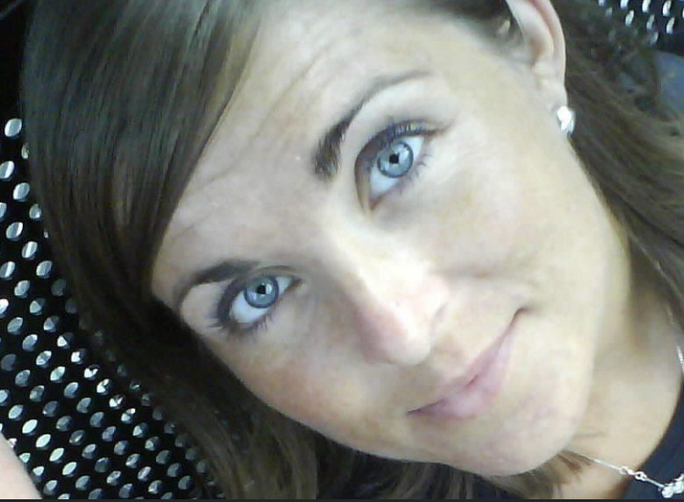
Odločitev, da obiščem Quantum Health, je bila ena najboljših odločitev v mojem življenju.
Manca Drnovšek
Milena je neumorna v svojem raziskovanju najboljših in učinkovitih pristopov za svoje stranke.
Ana Maria Mitič
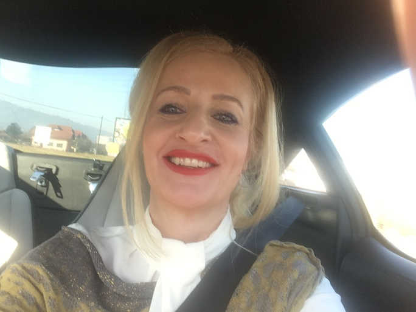
Quantum Health je oaza miru in harmonije v osrčju Ljubljane, kjer dr. Milena Omerzu Pevec s svojo srčnostjo in znanjem pomaga do dobrega počutja.
Iris Verzulak
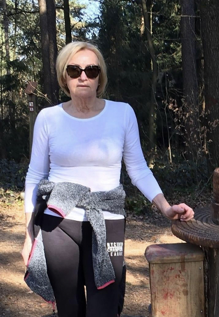
Sem dolgoletna obiskovalka Quantuma in dr. Milena je moja osebna spremljevalka na poti moje celostne preobrazbe.
Olga Jurič
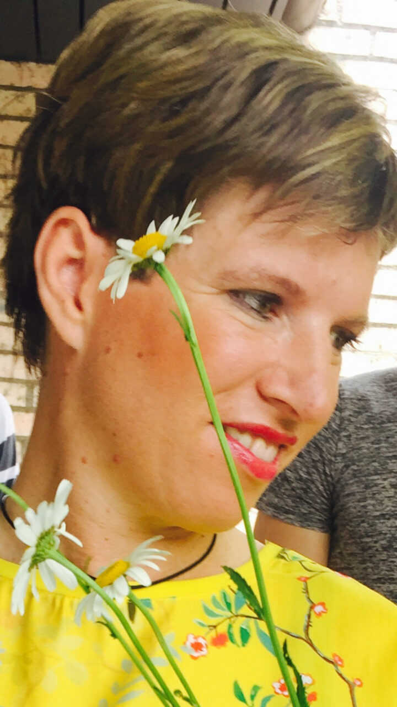
Quantum Health center je prekrasen center za različne terapije telesa in pomlajevanja obraza. Nudi zasebnost, intimnost in strokovno osebje.
Maruša Glavan
Kot profesionalna plesalka se težko izognem pomenu urejenega zunanjega izgleda. V Quantum Health se vedno znova z veseljem vračam.
Maša Kastelic
Milenino znanje o holističnih vedah in estetiki je veliko. Meni osebno je neizmerno pomagala in mi svetovala v najtežjih trenutkih.
Branka Steindl Keček
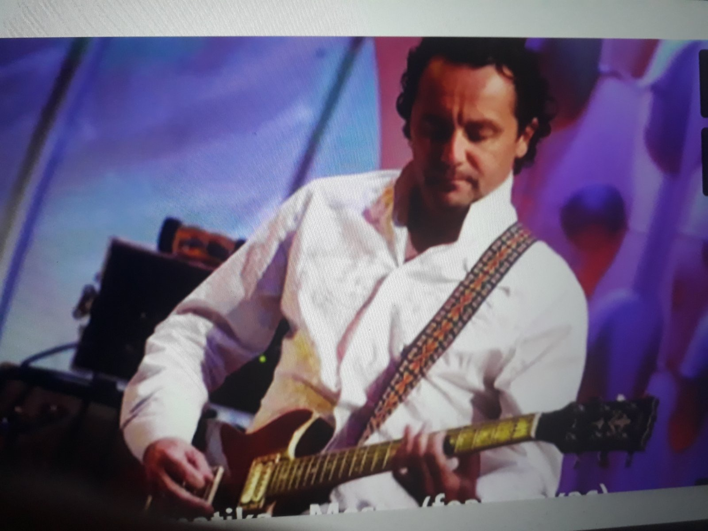
Quantum Health ... zelo strokovno, profesionalno, odgovorno, predvsem pa vedno predano in s polnim srcem posvečeno.
Slave Stojanović
Prof. športne vzgoje in nogometni trener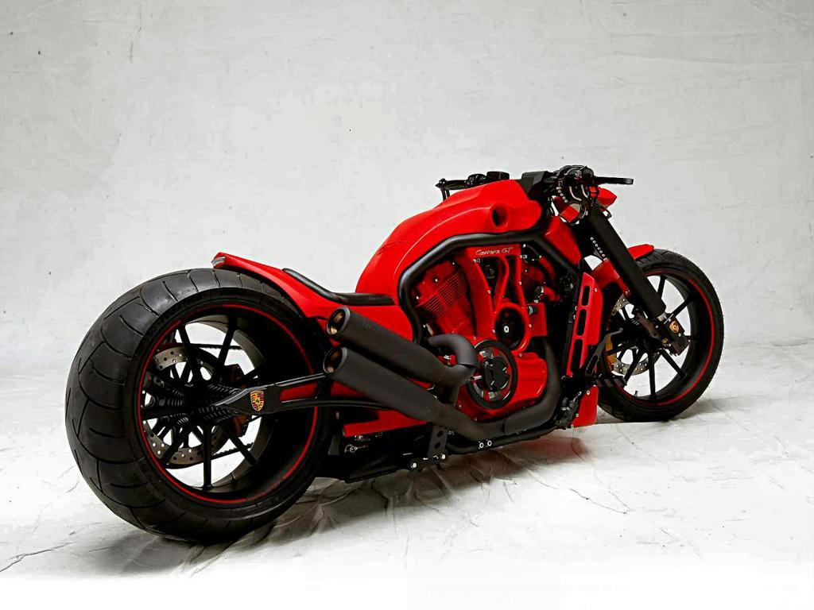
Zaupam strokovnemu znanju in izkušnjam. Mileni lahko rečem še ena mama.
Zak
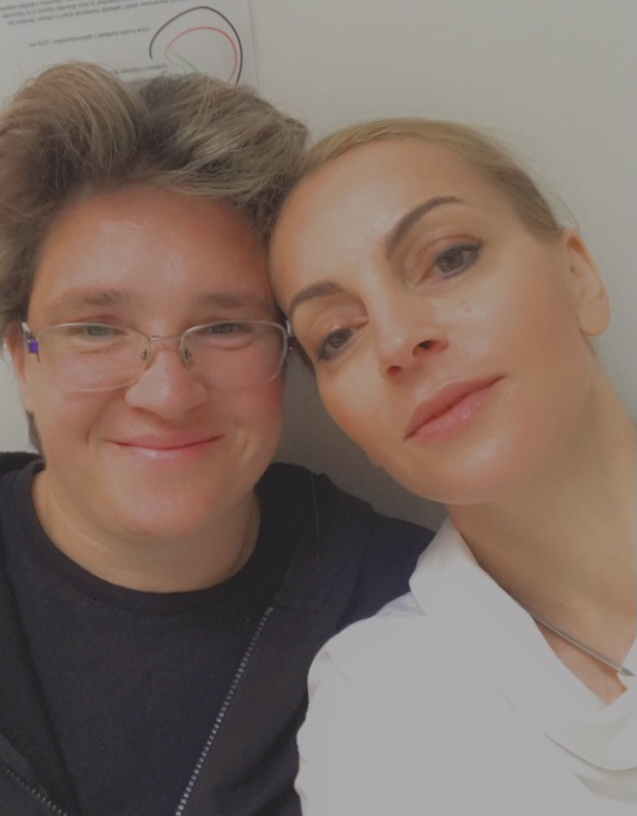
Quantum Health center je balzam za telo in dušo. Strokovnost in celovitost spremlja človeška toplina, odprtost in osebnostni pristop.
Alenka Primožič
Prijava
Rezervacija za osebno obravnavo
Pošljite osnovne podatke in kratek opis želje. Obrazec je pripravljen za povezavo z e-poštnim ali CRM sistemom.